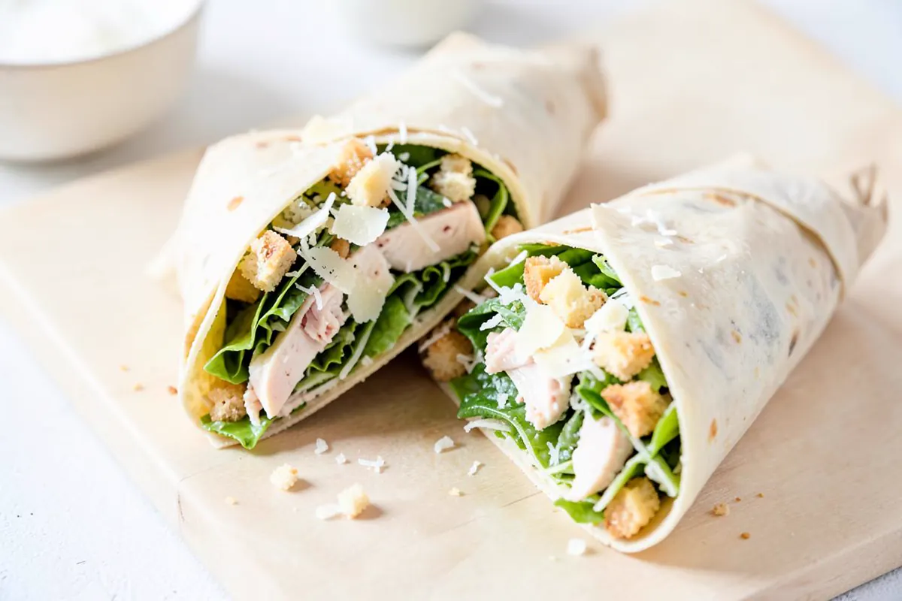

Chicken Caesar Wrap

Illustrative image.
A chicken caesar wrap takes everything good about the salad and makes it portable. Grilled chicken, cold crunchy romaine, shaved parmesan and a generous amount of dressing are rolled into a large flour tortilla with crushed croutons for texture.
It takes about twenty minutes start to finish and works equally well as a packed lunch or a quick dinner. Two wraps make a solid meal; cut in half, they hold together better and are easier to eat.
Ingredients
- 2 boneless, skinless chicken breasts
- 1 tbsp olive oil
- Salt and pepper, to taste
- 2 large flour tortillas
- 2 cups romaine lettuce, chopped
- 1/3 cup Caesar dressing
- 1/4 cup shaved parmesan cheese
- 1/2 cup croutons, roughly crushed
Instructions
- Season the chicken breasts with salt and pepper. Heat olive oil in a skillet over medium-high heat and cook the chicken for 5-6 minutes per side until cooked through.
- Let the chicken rest for 5 minutes, then slice into thin strips.
- In a bowl, toss the chopped romaine with the Caesar dressing until well coated.
- Lay a tortilla flat and layer with the dressed romaine, sliced chicken, shaved parmesan, and crushed croutons.
- Fold in the sides and roll tightly into a wrap. Slice in half and serve immediately.
Why this recipe works
Romaine is the right lettuce here because it stays crisp under dressing instead of wilting. Crushed croutons spread the crunch evenly through the filling, and warming the tortilla for a few seconds makes it pliable enough to roll tightly without tearing.
Tips for success
- Cook the chicken to 165 F and let it rest for five minutes before slicing, so the juices stay in the meat.
- Dry the lettuce thoroughly. Water is what makes a wrap go limp by lunchtime.
- Roll tightly, fold in the sides first, then continue rolling. A loose wrap falls apart in the middle.
Substitutions that work
- Leftover roast chicken or store-bought rotisserie chicken cuts the cooking time to almost nothing.
- Use a spinach or tomato tortilla, or a whole wheat wrap, if you prefer a different bread.
- Greek yogurt mixed with a little parmesan and lemon can lighten the dressing if you do not want a full cream-based caesar.
Storage and make-ahead
Wrap tightly in foil or parchment and refrigerate for up to a day. Keep the dressing separate if you are packing it more than a few hours ahead, and add the lettuce just before eating. Cooked chicken keeps for three days in the fridge.
Serving suggestions
Serve with a few pickle spears, a handful of chips or a small fruit salad. It pairs well with a cup of tomato soup on a cold day, and the same filling works as a salad without the tortilla.
A note on packing it for later
A wrap that sits in a bag for six hours needs a little planning. Choose a large flour tortilla rather than a small one, because a tight roll with too much filling splits at the seam. Wrap the finished roll in parchment first and then foil, twisting the ends so it holds its shape. If you are packing it in the morning, keep the dressing in a small separate pot and add it just before eating; dressed lettuce starts to collapse within an hour. A cold wrap also firms up in the refrigerator, so let it sit at room temperature for ten minutes before you unwrap it.
Frequently asked questions
How do I stop a chicken caesar wrap going soggy?
Dry the lettuce, dress it lightly rather than soaking it, and keep the dressing in a separate container if the wrap will sit for more than a couple of hours.
Can I make this ahead for lunch?
Yes. Cook and slice the chicken the night before, store the components separately, and assemble in the morning. The wrap holds for about six hours in a cool bag.
What can I use instead of croutons?
Toasted panko, crushed crackers or a handful of toasted almonds all give the same crunch without going soft as quickly.